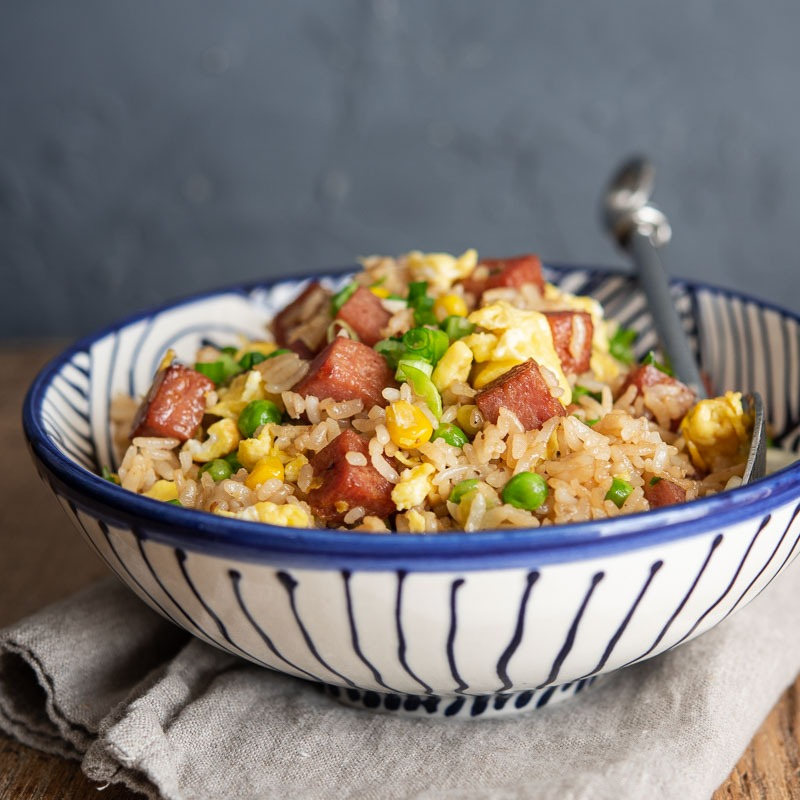

Spam Fried Rice

Description
Spam seems to get a lot of hate around where I live. Im not really sure why, because
it goes with everything! This is fried rice that incorporates spam as its main meat.
I like to make a large amount of this at a time because it still tastes great as
leftovers, heated or cold!
Ingredients
for the fried rice
- 2 tablespoons of preferred cooking oil
- 3 eggs (whisk and set in a bowl)
- 1 can of Spam, diced to size preference
- 2 cloves of garlic, minced (I use way more, its about your preference after 2 cloves)
- 2 green onions, chopped
- 1/2 cup frozen peas, thawed
- 1/2 cup frozen corn, thawed
- 4 cups of rice, cooked the day before (for best consistency)
for the fried rice sauce
- 2 tablespoons of soy sauce
- 1 tablespoon of oyster sauce
- 2 teaspoons of sesame oil
- 1/tsp crushed black pepper
Steps
- For the sauce, mix all 4 ingredients in a small bowl and set aside
- Heat 1 tablespoon of your cooking oil in a wok over medium-high heat. Add your
eggs and stir until mostly cooked, but still wet. Place them on a plate for later.
- Add the other tablespoon of oil to the wok, and add your Spam. Fry until crispy and browned slightly.
- Add the garlic and green onion and stiry fry for a minute.
- Add peas and corn and stir fry for another minute.
- Add your rice and mix until rice grains are separated and well incorporated into the rest of the fried spam and veggies.
- Pour the fried rice sauce over and toss well.
- Pour over the scrambled eggs and continue to toss to mix and heat through.Serve hot!